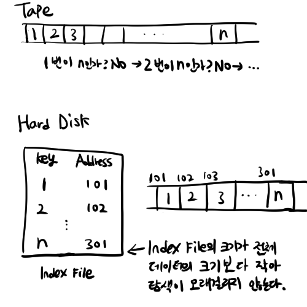
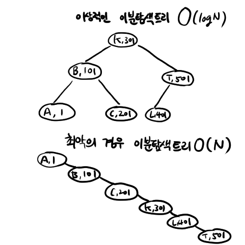

오타,오류 지적 환영합니다.
용어정리 및 기초지식
Secondary Memory
컴퓨터는 총 4가지의 메모리로 구성됩니다.
- ALU의 연산값을 저장하는 Registar
- 캐싱을 위해 존재하는 Cache메모리
- Main Memory(보통은 RAM을 말합니다)
- Disk Storage.
이 4가지 메모리중 CPU에 직접 연결되는 Registar, Cache, Main Memory는 Primary Memory라고 합니다.
반면, CPU에 직접 연결되지 않고 Primary Memory를 거쳐 연결되는 메모리를 Secondary Memory라고 합니다. Hard Disk Drive(HDD), Solid State Drive(SSD), Tape등이 있죠.
HDD,SSD의 속도는 RAM에 비해 아주 느립니다. RAM이 1초면 R/W하는 작업을 HDD가 하려면 2일 22시간이 걸린다고하지요. 하지만 HDD는 RAM에 비해 용량 당 단가가 싸다는 장점이 있습니다.
파일(File)이란?
Secondary Memory에 기록되는 같은 종류의 레코드들의 집합
이름,학번,나이,전화번호로 구성된 학생 정보를 HDD에 기록한다고 해봅시다. 여기서 이 이름,학번,나이,전화번호로 된 묶음 하나를 레코드(Record)라고 하고 학생 정보 레코드들의 집합을 **파일(File)**이라고 합니다.
파일 구조(File Structor)란?
파일에 들어있는 데이터들의 표현과 데이터 처리 연산들의 집합
학생 정보 파일 구조를 C언어로 표현한다면
이런 식이 되겠습니다.
그럼 좋은 파일 구조는 뭘까요? 좋은 파일 구조는 가능한 최소 비용으로 데이터를 읽고 쓸 수 있는 파일 구조 즉,
디스크 access 횟수를 최소로 줄일 수 있는 파일 구조가 좋은 파일 구조입니다.
파일처리의 역사
순차접근방식
과거엔 모든 정보를 한줄로 나열하고 순차접근방식(Sequential Access)으로 데이터를 찾았습니다. 대표적으로 과거에 사용하던 카세트 테이프를 생각하면 됩니다. 오디오에 넣으면 순서대로 재생하고, 구멍에 연필을 꽂아 돌려 앞으로 넘기거나 뒤로 되돌릴 수 있었죠.
따라서 head가 1번에 있다면 n번 데이터를 찾을 때 2,3,4, … n-1을 거쳐가야 n번에 도착할 수 있었습니다. 시간이 아주 오래걸리는 작업이죠
Simple Index
그러다 Hard Disk가 나오고 비순차접근방식(Random Access)으로 데이터에 접근할 수 있게 되었습니다.파일들의 Key값과 주소를 저장하는 Index File을 저장하기 때문에 이 Index File만 보고 데이터를 찾아가면 되서 찾는 속도가 훨씬 빨라졌죠.
하지만 단점도 있었습니다. 한 데이터의 크기가 바뀌면 뒤따라오는 다른 데이터들의 주소도 바뀌어 Index File을 관리하기 어려웠습니다.

Binary Search Tree
Index File을 더 빠르게 탐색하기위해 이진트리를 이용해 키와 주소를 저장하기 시작했습니다. 가장 이상적인 경우 logN의 시간이 걸리게되죠.
하지만 한쪽으로만 자라는 기형의 이진트리가 생기게되면(최악의 경우) 속도는 기존과 같게됩니다.

Balanced Binary Tree
트리가 한쪽으로만 자라는 기형적인 이진트리 (skewed binary tree,사향 트리라고 합니다.)를 막기 위해서 Balanced Binary Tree를 사용하기 시작합니다.
Balanced Binary Tree는 N개의 원소가 주어지면 항상 logN+1의 높이를 유지하는 트리입니다. 탐색은 항상 이상적으로 이루어지지만, 삽입 삭제는 트리를 재구성해줘야해서 추가삭제비용이 큽니다.
AVL tree
Balanced Binary Tree의 한 종류로, AVL tree는 같은 root를 가지는 두 서브트리간의 높이 차이가 1 이하인 이진검색트리를 말합니다. 원소를 추가,변경할 때마다 트리가 AVL 트리가 아니게 될 경우 원소를 재배치해 AVL tree를 유지하는 방식입니다. 이 방식대로면 이상적인 형태의 이진검색트리만 계속 유지되겠죠?

(출처: https://en.wikipedia.org/wiki/AVL_tree)
그 밖의 해결책
AVL tree말고도 B-tree, B+tree, Hashing, Extendible hasing 등등의 다양한 해결책이 있습니다.